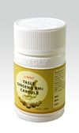
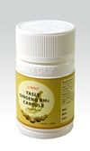

Tasly Ginseng RH2 Capsules is a combination of effective Chinese herbs made under highly accreditation techniques.
It comes in granules, nourishing brain and reviving vital energy.
What is Ginseng RH2 Capsules effective for?
It is said to dilate the celebral arteries and improving oxygen supply by promoting blood circulation.
Improves brain micro-circulation and prevents vascular spasm. Mainly effective for overcoming various types of headaches.
It prevents headache due to hypertension, headache due to stress, menopausal headache, periodic headache, migraine etc.
It also helps in dredging the meridian to promote circulation.
Who can use Ginseng RH2 Capsules?
Tasly Ginseng RH2 Capsules is a combination of effective Chinese herbs made under highly accreditation techniques. It comes in granules, nourishing brain and reviving vital energy
What is Ginseng RH2 Capsules?
Tasly Ginseng RH2 Capsules is a combination of effective Chinese herbs made under highly accreditation techniques. It comes in granules, nourishing brain and reviving vital energy
 

{kind=link}